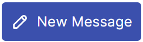
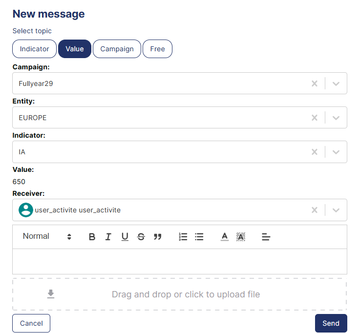
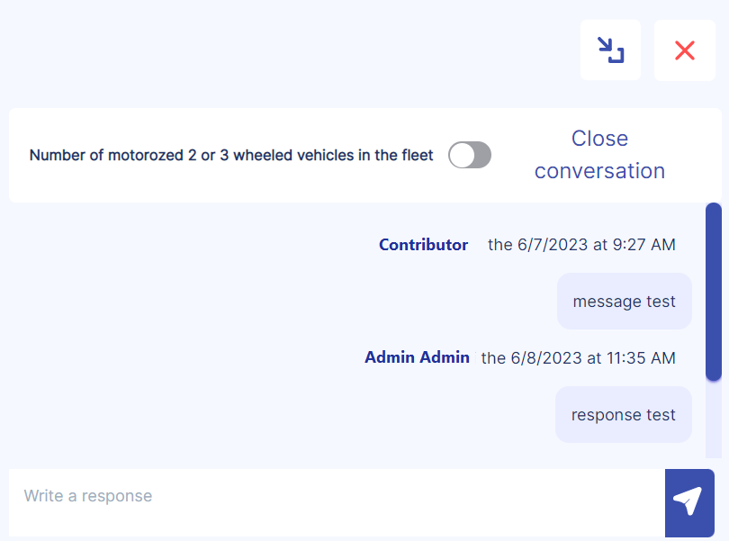
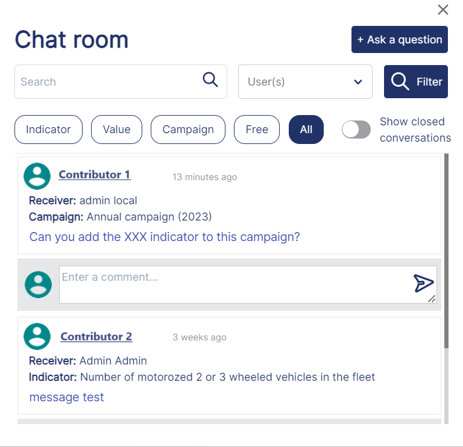
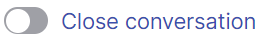
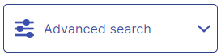
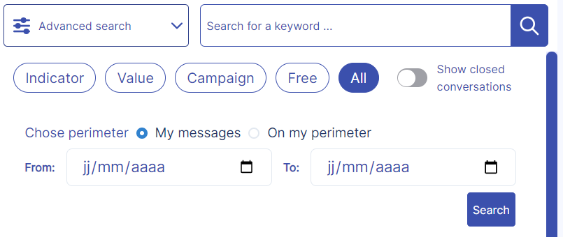
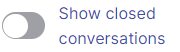

Question and Answer Log
 Related "Quick Start" documentations
Related "Quick Start" documentations
SEARCH TIP Press CTRL + F (Windows and Linux) or CMD + F (Mac) to search within this page.
To access this screen, click: Data entry > Audit and logs > Question and answer log.
Some actions, such as screen access, are permitted only for authorized users, that is, users with the appropriate profile. In other words, if the user does not have the right profile, the user cannot perform the action.
To configure this security (also called user rights), complete the following steps:
-
Define the profiles in the Profile Management screen.
-
Define users and attach one or more profiles to them in the User Management screen.
-
Assign user rights to the desired profiles in the Profile Matrix screen.
The table below contains screen actions that are related to user rights:
| Module | Screen | Action |
|---|---|---|
|
Audit and logs |
Question and answer log |
Screen access |
|
Update question |
||
|
Update response |
||
|
Close any conversation |
Introduction
The Question and Answer Log screen facilitates communication between data contributors and data managers, enabling efficient resolution of data collection queries and maintaining audit trails for compliance purposes.
You can send and answer questions with this screen by sending and receiving messages.
Moreover, you can close or reopen conversations, as well as reassign them to another recipient.
NOTE Alternative access points: You can also ask and answer questions through the Data Collection Campaigns screen and through the Chat Room.
By default, you can view all open conversations. To view specific conversations and/or closed conversations, you can search by typing keywords, and/or using advanced search.
{kind=link}
Send a Message
Questions are categorized under different topics:
-
Indicator: Questions related to a specific indicator regardless of the entity in which it is deployed
-
Value: Questions related to the value of an indicator for a specific entity
-
Campaign: Questions related to a specific campaign
-
Free: Questions unrelated to indicators, their values, or campaigns
To send a message:
-
Click the

button.The New message pop-up panel appears.

-
Select the Topic.
-
Depending on the topic, select the Campaign, the Entity, and/or the Indicator.
NOTE If you select Free as a topic, skip this step.
-
Select the Receiver of the question.
NOTE If the topic is Indicator, the question is directly assigned to the indicator referent.
-
Write your question.
You can set the text font, size, and style.
To add an attachment, drag and drop or click the file upload area.
-
Click Send.
A new conversation appears in the conversation list. The designated receiver automatically receives an email notification prompting them to access the application and answer.
Answer a Message
To answer a message:
-
Click the conversation that contains the message you want to answer.
The conversation appears to the right of the conversation list.

-
Write a message in the response entry area.
-
Click the button.
Your answer appears in the conversation.
If you prefer to answer your message through the Chat Room, click the button at the top of the conversation.
The Chat Room pop-up panel appears.

To close the Chat room pop-up panel, click the button at the top of the conversation.
Close or Reopen a Conversation
NOTE Authorized users can close any conversation, even unanswered ones. See the Security Notes above.
To close a conversation:
-
Click the

switch.The Confirmation pop-up window appears.
-
Click Submit.
To reopen a conversation:
-
Click the switch.
The Confirmation pop-up window appears.
-
Click Submit.
Reassign a Conversation
NOTE The sender can reassign open conversations that received at least one reply.
Reassigning a conversation allows a recipient other than the original one to answer it.
To reassign a conversation from the conversation list:
-
Click the button on the conversation you want to reassign.
The Reassign a question pop-up panel appears.
-
Select a topic, followed by the receiver to whom you want to reassign the message.
-
Write a message in the response entry area, then click Send.
The reassigned conversation becomes immediately visible to both the sender and the new receiver. From this point forward, only the new receiver can answer it.
Search for a Conversation
To search for a specific conversation, you can either use the search box for quick keyword matching, the advanced search for filtered results based on multiple criteria, or combine both methods for precise targeting.
Using the Search Box
To search using the search box, type one or more letters or keywords.
As you type, the conversation list updates dynamically, and the system highlights matching letters or keywords in bold.
Using the Advanced Search
To search using the advanced search:
-
Click the

button.The Advanced search panel appears as shown below.

-
Select one or more filters:
-
The topic
-
The perimeter, which includes:
-
My messages: Only the messages for which you are the recipient
-
On my perimeter: Only the messages included in the recipient's perimeter (campaigns, entities, and/or indicators)
-
-
The indicator
-
The period range
The conversations that match the filters appear.
-
-
Optional: Click the

switch to view closed conversations.
To view all the conversations again, select All as a topic.
To close the Advanced search panel, click the button again.